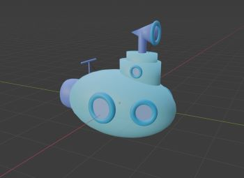

Portfolio
Blender-Arbeiten
Ich hab erst vor ein paar Wochen angefangen mit Blender zu arbeiten, also ist das grad noch kein Meisterwerk ^^"
Audio-Beispiele zum Arbeiten (Nicht von mir)
Royalty Free Music from Benjamin Tissot (also known as
Bensound)
Royalty Free Music from Benjamin Tissot (also known as
Bensound)
Video-Beispiel für die Übung